%%%%%%%%%%%%%%%%%%%%%%%%%%%%%%%%%%%%%%%%%%%%%%%%%%%%%%%%%%%%%%%%%%% %%% Simple Forced Choice % Imagine that you are doing a psychophysical detection experiment in which % a subject is asked to detect the presence of a brief, very dim flash of % light in a dark room. You use a simple forced-choice method in which the % light is flashed on half of the trials (randomly interleaved). On each % trial, the subject must respond "yes" or "no". We assume that the % subjects' performance is determined by the number of photopigment % isomerizations on each trial. % When no light is flashed, there is still a certain probability that some % number of photoreceptors will respond, due to thermal isomerizations of % photopigment molecules. Let's assume that on average only 3 photopigment % molecules isomerize. darkLight=3; % On each trial for no light was flashed, the response is given % by a draw from a Poisson distribution with this darkLight value % as its mean. We can generate a bunch of samples from this % distribution by using the inverse cumulative of the Poisson % distribution ntrials=1000; xrand=rand(ntrials,1); noiseAloneResponses=poissinv(xrand,darkLight); % Plot a histogram of the noise-alone responses, superimposed % with the Poisson pdf: response=[0:20]; noiseAlonePDF=poisspdf(response,darkLight); plot(response,noiseAlonePDF) axis([min(response) max(response) 0 0.25]) xlabel('Response') ylabel('Probability') noiseAloneHist=hist(noiseAloneResponses,response); hold on bar(response,noiseAloneHist/ntrials) hold off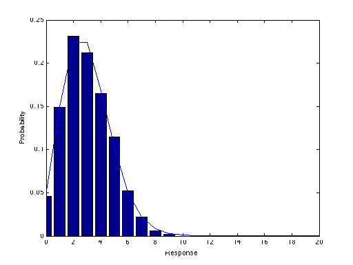
Next, let's use a stimulus intensity that causes 7 photopigment molecules will isomerize on average for a given trial. The total number of isomerizations on a given trial includes those caused by photon absoptions plus those that spontaneously isomerize.
stimulusStrength=5; xrand=rand(1,ntrials); signalPlusNoiseResponses=poissinv(xrand,darkLight+stimulusStrength); % Plot a histogram of the signal-and-noise responses, superimposed with the % Poisson pdf: signalPlusNoisePDF=poisspdf(response,darkLight+stimulusStrength); plot(response,signalPlusNoisePDF) axis([min(response) max(response) 0 0.25]) xlabel('Response') ylabel('Probability') signalPlusNoiseHist=hist(signalPlusNoiseResponses,response) hold on bar(response,signalPlusNoiseHist/ntrials) hold off
signalPlusNoiseHist =
Columns 1 through 19
1 6 17 30 53 75 116 133 147 117 101 83 48 36 15 14 5 1 1
Columns 20 through 21
1 0
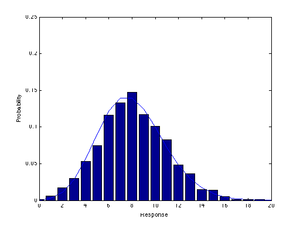 Plot the two Poisson pdf's (noiseAlone and signalPlusNoise) at the same time:
plot(response,[noiseAlonePDF' signalPlusNoisePDF']) legend('noise','signal'); hold on; xlabel('Response') ylabel('Probability')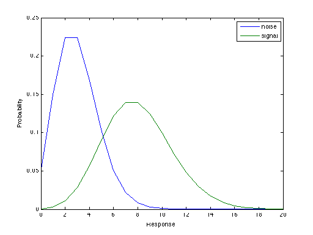
Let's say the subject uses a criterion of 4 isomerizations. That is, whenever there are 4 or more isomerizations, they respond "yes the signal was present". When there are fewer than 4, then they say "no the signal was not present".
criterion=4; line=[4 0;4 0.25]; plot(line(:,1),line(:,2),'r') % Everything to the right of the line corresponds to the "yes" response and % everything to the left corresponds to a "no".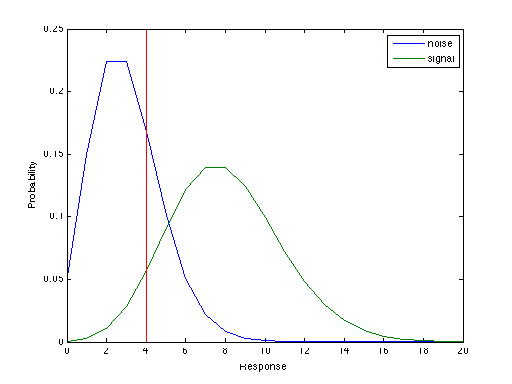
There are four possible outcomes on a given trial: hit, miss, false alarm, and correct rejection. We can calculate the percentage of trials that yield each of these outcomes from the simulated responses:
missRate=sum(signalPlusNoiseResponses<criterion)/ntrials hitRate=sum(signalPlusNoiseResponses>=criterion)/ntrials correctRejectRate=sum(noiseAloneResponses<criterion)/ntrials falseAlarmRate=sum(noiseAloneResponses>=criterion)/ntrials % Notice that the first two (correctDetect and miss) rates must sum to 1 % and the second two (falseAlarm correctReject) must sum to 1.
missRate =
0.0540
hitRate =
0.9460
correctRejectRate =
0.6380
falseAlarmRate =
0.3620
We can also compute what these values should be based on the theoretical Poisson distribution.
missProbability=sum(signalPlusNoisePDF([1:criterion])) hitProbability=1-missProbability correctRejectProbability=sum(noiseAlonePDF([1:criterion])) falseAlarmProbability=1-correctRejectProbability
missProbability =
0.0424
hitProbability =
0.9576
correctRejectProbability =
0.6472
falseAlarmProbability =
0.3528
The hit rates and the false alarm rates all depend on the subject's criterion. We can plot an entire ROC curve by redoing the calculations for a bunch of criteria:
hitP=zeros(size(response)); missP=zeros(size(response)); correctRejectP=zeros(size(response)); falseAlarmP=zeros(size(response)); % c is the criterion, loops through taking on values of response=[0:20]. % i=c+1 is the iteration index, since Matlab indexing starts counting from % 1 instead of 0. for c=response i=c+1; missP(i)=sum(signalPlusNoisePDF([1:c])); hitP(i)=1-missP(i); correctRejectP(i)=sum(noiseAlonePDF([1:c])); falseAlarmP(i)=1-correctRejectP(i); end clf; plot(falseAlarmP,hitP) xlabel('False Alarm Rate') ylabel('Hit Rate')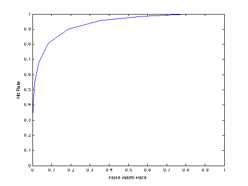
Now we can repeat the whole thing for several different stimulus strengths to produce a family of ROC curves.
stimulusStrengths=[0:10]; hitP=zeros([length(response),length(stimulusStrengths)]); missP=zeros([length(response),length(stimulusStrengths)]); correctRejectP=zeros([length(response),length(stimulusStrengths)]); falseAlarmP=zeros([length(response),length(stimulusStrengths)]); for s=stimulusStrengths j=s+1; signalPlusNoisePDF=poisspdf(response,darkLight+s); for c=response i=c+1; missP(i,j)=sum(signalPlusNoisePDF([1:c])); hitP(i,j)=1-missP(i,j); correctRejectP(i,j)=sum(noiseAlonePDF([1:c])); falseAlarmP(i,j)=1-correctRejectP(i,j); end end plot(falseAlarmP,hitP) xlabel('False Alarm Rate') ylabel('Hit Rate') % As the stimulus strength is increased, there is less and less overlap % between the two (noiseAlonePDF, signalPlusNoisePDF) response % distributions, and ROC curve becomes more and more bowed away from the % diagonal. For very weak stimuli there is no way to get a high hit rate % without also getting lots of false alarms. In the limit, for a very % strong stimulus, you can get a perfect hit rate with no false alarms.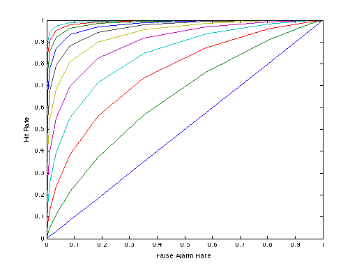
Next, repeat all of this for the equal-variance Gaussian case
criteria = -3:.1:10; stimulusStrengths=[0:5]; hitP=zeros([length(criteria),length(stimulusStrengths)]); falseAlarmP=zeros([length(criteria),length(stimulusStrengths)]); for s=stimulusStrengths j=s+1; for c=1:length(criteria) crit = criteria(c); hitP(c,j)=1-normcdf(crit,s,1); falseAlarmP(c,j)=1-normcdf(crit,0,1); end end plot(falseAlarmP,hitP) xlabel('False Alarm Rate') ylabel('Hit Rate') axis square figure(2) plot(norminv(falseAlarmP),norminv(hitP)) xlabel('z(False Alarm Rate)') ylabel('z(Hit Rate)') axis square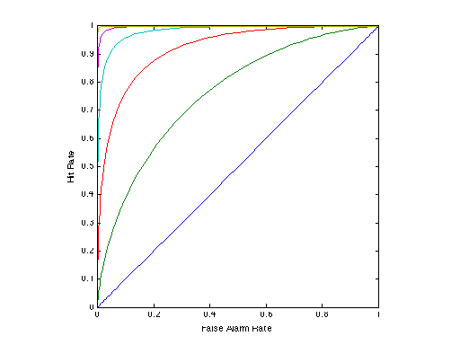 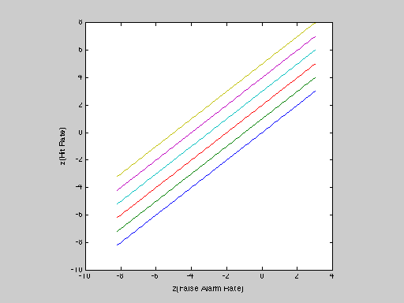
Next, repeat all of this for the UNequal-variance Gaussian case
criteria = -3:.1:10; stimulusStrengths=[0:5]; hitP=zeros([length(criteria),length(stimulusStrengths)]); falseAlarmP=zeros([length(criteria),length(stimulusStrengths)]); for s=stimulusStrengths j=s+1; for c=1:length(criteria) crit = criteria(c); hitP(c,j)=1-normcdf(crit,s,2); falseAlarmP(c,j)=1-normcdf(crit,0,1); end end close all plot(falseAlarmP,hitP) xlabel('False Alarm Rate') ylabel('Hit Rate') axis square figure(2) plot(norminv(falseAlarmP),norminv(hitP)) xlabel('z(False Alarm Rate)') ylabel('z(Hit Rate)') axis square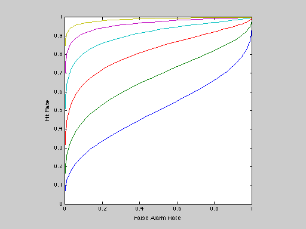
%%%%%%%%%%%%%%%%%%%%%%%%%%%%%%%%%%%%%%%%%%%%%%%%%%%%%%%%%%%%%%%%%%% %%% Two Alternative Forced Choice % We'll use the Newsome et al. direction discrimination experiments for an % example. They recorded neural activity of MT neurons in response to % stimuli consisting of a field of coherently moving dots superimposed on a % field of randomly moving dots. The strength of the motion signal was % controlled by varying the ratio of coherent to random dots. The coherent % dots moved either in the cell's preferred direction or in the opposite % (null) direction. The monkeys were trained to report the direction of % motion by making an eye movement at the end of each trial. % % Although Newsome et al. did not do it exactly this way, it will simplify % matters if we have two intervals in each trial. A stimulus moves to the % right on one interval (chosen randomly), and it moves to the left on the % other interval. On each trial, the monkey must choose the interval % during which the motion was rightward. Because the stimulus is optimized % for the recorded neuron (covers the receptive field, moves in the % preferred direction, etc.), one might hypothesize that the monkey % monitors the response of that one neuron to make his decision, and % chooses the interval that evokes the greater response. The task is very % difficult for low coherence levels (e.g., below 5%), and very easy for % high coherence leves (e.g., above 20%).
First, we adopt a simple model for how the neuron's response varies with stimulus strength (percent coherence) for stimuli moving in the preferred and null directions.
stimulusStrengths=[0:25]; % percent coherence zeroResponse=20; % firing rate for 0 coherence prefSlope=1; nullSlope=1/4; prefResponses = zeroResponse + prefSlope*stimulusStrengths; nullResponses = zeroResponse - nullSlope*stimulusStrengths; plot(stimulusStrengths,[prefResponses' nullResponses']) xlabel('Stimulus strength (% coherence)') ylabel('Response (spikes/sec)') % For motion in the preferred direction, the simulated mean firing rate % rises linearly with coherence. For motion in the null direction, the % mean firing rate declines linearly with coherence.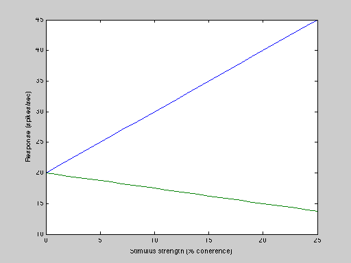
Next we adopt response probability density functions for to characterize the variability in the responses. We'll use normal distributions with the response variance set equal to 1.5 times the mean response. For example, the response PDFs for 6 percent coherence (in preferred and null directions) are:
response=[0:50]; % range of possible responses s=6; % 6 percent coherence fanoFactor=1.5; nullMean = zeroResponse - nullSlope*s; nullSD = sqrt(fanoFactor*nullMean); nullPDF = normpdf(response,nullMean,nullSD); prefMean = zeroResponse + prefSlope*s; prefSD = sqrt(fanoFactor*prefMean); prefPDF = normpdf(response,prefMean,prefSD); plot(response,[nullPDF' prefPDF']) xlabel('Response (spikes/sec)') ylabel('Probability') legend('null responses','preferred responses')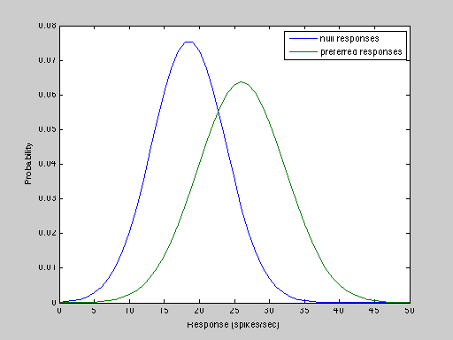
Finally, we compute the psychometric function (probability correct versus conherence level) from the response probability densities at different coherence levels. Probability correct is given by the integral of the product of the prefPDF times the nullCDF (see sdtHandout for derivation).
response=[0:100]; % range of possible responses pCorrect=zeros(length(stimulusStrengths),1); for s=stimulusStrengths j=s+1; nullMean = zeroResponse - nullSlope*s; nullSD = sqrt(fanoFactor*nullMean); nullCDF = normcdf(response,nullMean,nullSD); prefMean = zeroResponse + prefSlope*s; prefSD = sqrt(fanoFactor*prefMean); prefPDF = normpdf(response,prefMean,prefSD); pCorrect(j) = sum(prefPDF.*nullCDF); end plot(stimulusStrengths,pCorrect) xlabel('Stimulus strength (% coherence)') ylabel('Proportion correct') set(gca,'yLim',[0.5 1.01]); set(gca,'Ytick',[0.5 0.6 0.7 0.8 0.9 1.0]);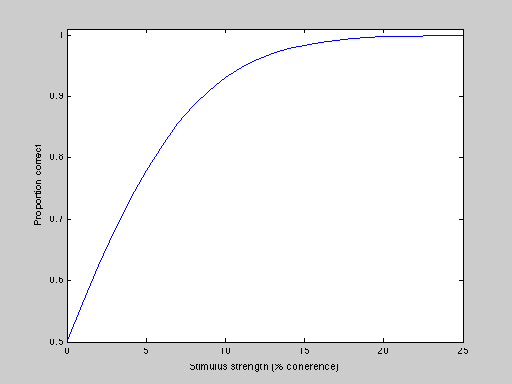
We can also simulate the experiment by taking draws from the two response probability densities at each of the coherence levels, to double check that the above calculation was correct.
numTrials=50; % #trials per coherence level numCorrect=zeros(length(stimulusStrengths),1); for s=stimulusStrengths j=s+1; nullMean = zeroResponse - nullSlope*s; nullSD = sqrt(fanoFactor*nullMean); prefMean = zeroResponse + prefSlope*s; prefSD = sqrt(fanoFactor*prefMean); for i=1:numTrials % draw a null response from the nullPDF nullResponse = nullMean + nullSD*randn; % draw a pref response from the prefPDF prefResponse = prefMean + prefSD*randn; if (prefResponse > nullResponse) numCorrect(j) = numCorrect(j)+1; end end end percentCorrect=numCorrect/numTrials; % Plot simulated percentCorrect with previously computed % probability correct. hold on plot(stimulusStrengths,percentCorrect,'ob') hold off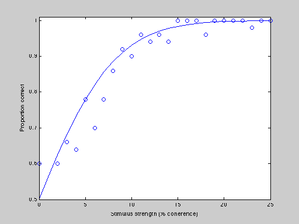
%%%%%%%%%%%%%%%%%%%%%%%%%%%%%%%%%%%%%%%%%%%%%%%%%%%%%%%%%%%%%%%%%%% %%% Response Pooling % In the first (simple forced choice, detecting a dim light flash) example, % we assumed that the responses of all of the photoreceptors were pooled % (summed) to make a perceptual decision. % In the second (two-alternative forced choice, motion discrimination) % example, we assumed that the perceptual decision was based on the % responses of only one MT neuron. What if we were to pool the responses of % many such MT neurons? Let's start by pooling the responses of just 2 % neurons, by assuming that the neurons' responses are statistically % independent, and by adopting a response pooling rule in which the % responses of the individual neurons are simply averaged. % Rerun the above simulation, averaging the responses of two neurons on % each interval of each trial: numNeurons=2; numCorrect=zeros(length(stimulusStrengths),1); for s=stimulusStrengths j=s+1; nullMean = zeroResponse - nullSlope*s; nullSD = sqrt(fanoFactor*nullMean); prefMean = zeroResponse + prefSlope*s; prefSD = sqrt(fanoFactor*prefMean); for i=1:numTrials % draw null responses from the nullPDF, and average them nullResponse = mean(nullMean + nullSD*randn(numNeurons,1)); % draw pref responses from the prefPDF, and average them prefResponse = mean(prefMean + prefSD*randn(numNeurons,1)); if (prefResponse > nullResponse) numCorrect(j) = numCorrect(j)+1; end end end percentCorrect2=numCorrect/numTrials; % Plot this new simulated psychometric data (in magenta) on top of the % previous simulation. hold on plot(stimulusStrengths,percentCorrect2,'om') hold off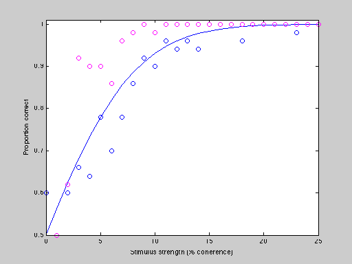
Most of the new magenta data points should lie above and to the left of the previously plotted blue data points. Not surprisingly, pooling statistically independent responses improves performance.
% In fact, we know exactly how much pooling helps. The variance of the sum % of a bunch of independent random variables is the sum of the individual % variances. Hence, the standard deviation of the mean response decreases % as the square root of the number of neurons in the pool. % First plot the neurometric function again for a single neuron: plot(stimulusStrengths,pCorrect) xlabel('Stimulus strength (% coherence)') ylabel('Proportion correct') set(gca,'yLim',[0.5 1.01]); set(gca,'Ytick',[0.5 0.6 0.7 0.8 0.9 1.0]); % Compute and plot the neurometric functions for several different pool % sizes, using this sqrt-N factoid: pCorrectN=zeros(length(stimulusStrengths),1); for numNeurons=[2,10,100] for s=stimulusStrengths j=s+1; nullMean = zeroResponse - nullSlope*s; nullSD = sqrt(fanoFactor*nullMean)/sqrt(numNeurons); nullCDF = normcdf(response,nullMean,nullSD); prefMean = zeroResponse + prefSlope*s; prefSD = sqrt(fanoFactor*prefMean)/sqrt(numNeurons);; prefPDF = normpdf(response,prefMean,prefSD); pCorrectN(j) = sum(prefPDF.*nullCDF); end hold on plot(stimulusStrengths,pCorrectN) hold off end % As the pool size increases, the neurometric function becomes very steep. % Large pool sizes predict unreasonably good performance.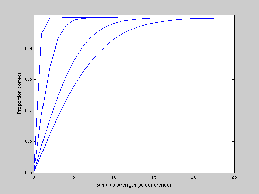
%%%%%%%%%%%%%%%%%%%%%%%%%%%%%%%%%%%%%%%%%%%%%%%%%%%%%%%%%%%%%%%%%%% %%% Covariance of Responses % But what if the neurons' responses are NOT statistically independent? It % is typically the case that for nearby cortical neurons, the spike counts % from trial to trial are correlated with one another. % It turns out that there is again a relatively simple formula that allows % us to compute the variance of the pooled responses. The improvement with % pool size is no longer simply given by sqrt(numNeurons) because of the % partial correlation in their responses. Rather, it is given by the % square root of % % 1 % - [1 + (N-1) p] % N % % where N is the number of neurons and p is the correlation coefficient. % First plot the neurometric function again for a single neuron plot(stimulusStrengths,pCorrect) xlabel('Stimulus strength (% coherence)') ylabel('Proportion correct') set(gca,'yLim',[0.5 1.01]); set(gca,'Ytick',[0.5 0.6 0.7 0.8 0.9 1.0]);
Compute and plot the neurometric functions for several different pool sizes, using this new factoid about the variance of correlated random variables:
corCoeff=0.1; pCorrectN=zeros(length(stimulusStrengths),1); for numNeurons=[2,10,100,1000] SDfactor = sqrt((1/numNeurons) * (1 + (numNeurons-1)*corCoeff)); for s=stimulusStrengths j=s+1; nullMean = zeroResponse - nullSlope*s; nullSD = sqrt(fanoFactor*nullMean)*SDfactor; nullCDF = normcdf(response,nullMean,nullSD); prefMean = zeroResponse + prefSlope*s; prefSD = sqrt(fanoFactor*prefMean)*SDfactor;; prefPDF = normpdf(response,prefMean,prefSD); pCorrectN(j) = sum(prefPDF.*nullCDF); end hold on plot(stimulusStrengths,pCorrectN) hold off end % Pooling over many partially correlated neurons causes much less % improvement in performance (the neurometric curves doen't shift to % terribly low thresholds), and there is virtually no improvement at all % for pool sizes larger than 100. This should be evident by inspecting the % above equation. When N is large: % % 1 % - [1 + (N-1) p] -> p % N % % Hence the correlation coefficient limits the efficacy of response % pooling.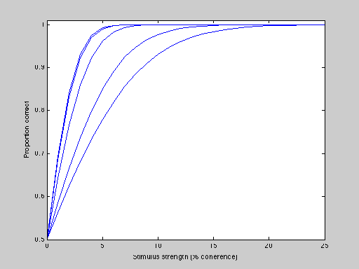